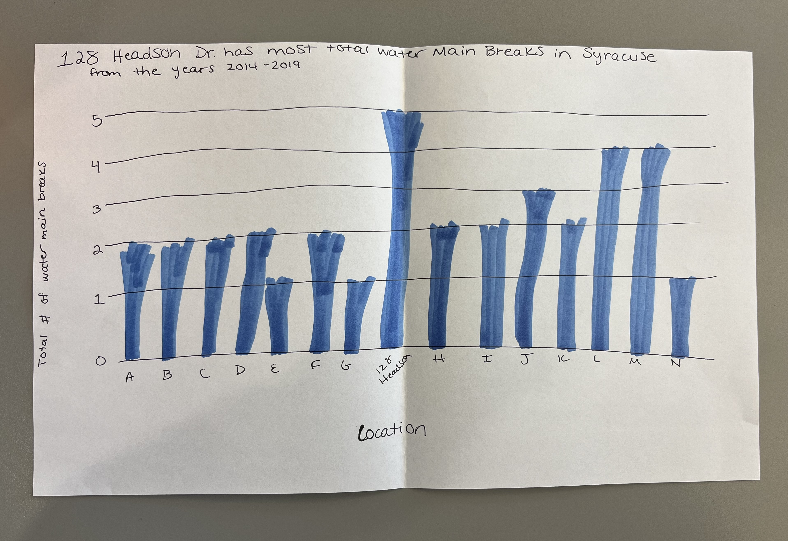

Subhed here
This website is to help me practice coding. I have a chart I made with datawrapper below. Even though it is not my midterm chart, I am glad I figured out how to put a datawrapper chart into code.
The first chart is the first example one we made in class using datawrapper. The picture below is my midterm chart sketch.
The sketch of my midterm chart shows how one location is Syracuse had the most water main breaks in the city over the span of 2014-2019. The blue colored bars of the bar chart are meant to be water breaks shooting up.
